Cátedra 17: Fluctuaciones Termodinámicas
Las variables termodinámicas fluctúan alrededor de sus valores medios. La varianza de la energía se relaciona con la capacidad calórica, y las fluctuaciones relativas decaen como $1/\sqrt{N}$: por eso la termodinámica clásica funciona.
Temas que cubre
- Varianza de la energía en el ensemble canónico: $\sigma_E^2 = \langle E^2\rangle - \langle E\rangle^2$
- Relación entre $\sigma_E^2$ y la capacidad calórica: $\sigma_E^2 = k_BT^2 C_V$
- Fluctuaciones relativas $\sigma_E/\langle E\rangle \sim 1/\sqrt{N}$: el límite termodinámico
- Equivalencia entre ensembles en el límite $N \to \infty$
- Fluctuaciones de volumen a $T$ y $p$ fijos: relacionadas con la compresibilidad isotérmica $\kappa_T$
- Teorema de fluctuación-disipación: susceptibilidades como medida de fluctuaciones
Conceptos clave
Fluctuaciones en el ensemble canónico
En el ensemble canónico, la energía del sistema fluctúa en torno a $\langle E\rangle$ con desviación estándar $\sigma_E = \sqrt{k_BT^2 C_V}$. Para $N$ grande, $\sigma_E \propto \sqrt{N}$ pero $\langle E\rangle \propto N$, así que $\sigma_E/\langle E\rangle \propto 1/\sqrt{N} \to 0$.
Capacidad calórica como susceptibilidad
$C_V = \sigma_E^2/(k_BT^2)$: la capacidad calórica mide qué tan fácil es excitar el sistema térmicamente, lo que equivale a cuánto fluctúa su energía. Un $C_V$ grande implica grandes fluctuaciones — y viceversa.
Equivalencia de ensembles
En el límite termodinámico $N\to\infty$, los ensembles microcanónico, canónico y gran canónico dan los mismos promedios. Las fluctuaciones se vuelven despreciables y los ensembles son indistinguibles: la elección es solo de conveniencia matemática.
Fluctuaciones de $N$ (gran canónico)
En el ensemble gran canónico (a $T$ y $\mu$ fijos), el número de partículas $N$ fluctúa: $\sigma_N^2 = k_BT(\partial\langle N\rangle/\partial\mu)_{T,V}$. La compresibilidad $\kappa_T = -(\partial\ln V/\partial p)_T$ está relacionada con $\sigma_N^2/\langle N\rangle^2$.
Fórmulas fundamentales




Qué hay que entender
- Las fluctuaciones son reales y físicamente medibles — no son artefactos del ensemble. El ruido Johnson en resistencias eléctricas, el movimiento browniano y la opalescencia crítica son manifestaciones directas de fluctuaciones termodinámicas.
- $C_V$ grande ↔ fluctuaciones de energía grandes. Esto se vuelve dramático cerca de las transiciones de fase de segundo orden, donde $C_V \to \infty$ en el punto crítico.
- La equivalencia de ensembles no es trivial — requiere que las fluctuaciones relativas $\to 0$. Falla en sistemas pequeños (nanoestructuras, biomoléculas) donde la estadística de los ensembles sí difiere.
- El teorema de fluctuación-disipación es profundo: relaciona el ruido de equilibrio con la respuesta a perturbaciones externas, permitiendo medir susceptibilidades a partir de fluctuaciones espontáneas.